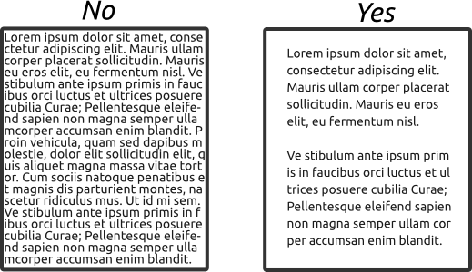

White space, in design, is the space between elements in a composition.
This concept is part of the design principles. White space should not be confused with the use of white in a composition. White space is the use of space, is also the lack of elements in a design that makes them visible and pleasing to the eye. White space has many advantages. The main is that the separation of elements between them make them to be more relevant and easy to interpret. For this there are two options: increase the size of the composition or remove items if you can not resize it.
Let's see an example:
What writting is easier to read? I think the writting of the right. Why? Because the use of space make the elements of a composition more easy to view. This example is only the use of white space in a writting. But white space it can be extrapolated on every form of design: websites, interiors, illustrations, buildings, etc.
However, the implementation of the white space is not easy. Distance between the elements must be neither too close nor too distant. Trial and error and consultation of good designs are the only way to improve the use of white space. The experience is the measure to know how good is a designer on the use of this principle.
Many times people use this design principle unconsciously. So I encourage you to use this principle in your compositions and you have it in mind.
Do you like this article? Share it with this link. Thanks for reading!